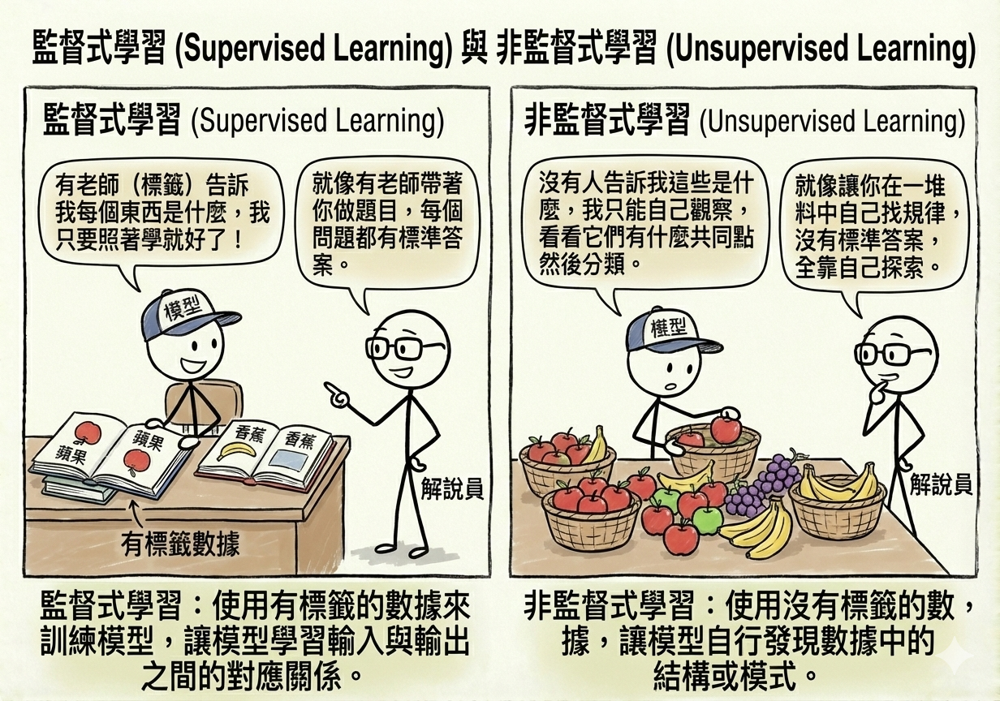

AI 應用問題類型
在開始深入各種技術細節之前，我們需要先了解 AI 究竟能解決什麼樣的問題。這就像在學習使用工具箱之前，先了解有哪些類型的釘子和螺絲一樣。本章將介紹 AI 的學習範式（它是如何學習的）以及資料分析的層次（它能提供多深的見解）。
2.1 學習範式
機器學習的核心在於「從資料中學習」。根據資料的型態以及學習的方式，我們可以將其分為幾種主要的範式。
監督式學習 (Supervised Learning)
這是目前應用最廣泛的 AI 學習方式。想像一位老師在教導學生，老師會提供題目（輸入資料）以及標準答案（標籤）。學生的目標是找出題目與答案之間的關聯規則，以便將來遇到沒有答案的新題目時，也能答對。
- 關鍵要素：需要有標籤的資料 (Labeled Data)。
- 生活案例：
- 垃圾郵件過濾：系統看過成千上萬封標示為「垃圾信」或「正常信」的郵件後，學會分辨新郵件。
- 房價預測：根據過去房屋的坪數、地點、屋齡（輸入）以及最終成交價（答案），預測新房子的價格。
非監督式學習 (Unsupervised Learning)
這種方式就像是自修，或者是一個嬰兒在探索世界。沒有老師告訴它什麼是對的、什麼是錯的，也沒有標準答案。模型必須自己從資料中尋找隱藏的結構或規律。
- 關鍵要素：只有輸入資料，沒有標籤。
- 生活案例：
- 顧客分群 (Customer Segmentation)：電商平台分析消費者的購買紀錄，自動將顧客分成「精打細算型」、「衝動購物型」等群體，但系統事先並不知道這些群體的定義。
- 異常偵測：信用卡公司分析刷卡行為，發現某筆交易與平常的模式差異過大，判定為潛在盜刷。

半監督式學習 (Semi-supervised Learning)
這是一種折衷方案。在現實世界中，取得有標籤的資料往往很昂貴（需要人工標註），但沒標籤的資料卻隨處可見。半監督式學習結合了少量的標籤資料和大量的無標籤資料。
- 類比：老師只教了幾個核心概念（少量標籤），剩下的要學生舉一反三，從大量練習題中自己摸索（大量無標籤）。
- 應用：醫療影像分析（醫生標註幾張 X 光片很花時間，但醫院有大量未標註的片子）。

強化學習 (Reinforcement Learning)
這就像是訓練寵物。我們不會直接告訴 AI 每一步該怎麼走，而是讓它在一個環境中嘗試。做對了就給予獎勵（Reward），做錯了就給予懲罰（Penalty）。AI 的目標是透過不斷嘗試錯誤（Trial and Error），找出能獲得最大累積獎勵的策略。
強化學習的過程可以拆解為以下幾個關鍵要素的互動：
- 代理人 (Agent)：也就是正在學習的 AI 模型（例如：掃地機器人）。
- 環境 (Environment)：代理人所處的世界（例如：充滿家具的客廳）。
- 狀態 (State)：代理人當前的情況（例如：前方 10 公分有障礙物）。
- 行動 (Action)：代理人採取的動作（例如：向左轉）。
- 獎勵 (Reward)：環境給予的回饋（例如：成功避開障礙物得 +1 分，撞到桌腳得 -10 分）。
探索與利用 (Exploration vs. Exploitation)
強化學習中有一個經典的難題： * 探索 (Exploration)：嘗試新的、未知的行動，希望能發現更好的策略（但也可能失敗）。 * 利用 (Exploitation)：堅持目前已知最好的策略，確保獲得穩定的獎勵。 AI 必須在這兩者之間取得平衡，才能不斷進步。
- 生活案例：
- AlphaGo：圍棋程式透過無數次的自我對弈，學習如何贏得比賽。它不僅學習人類棋譜，更透過自我探索發現了人類未曾想過的下法。
- 掃地機器人：在房間裡碰撞學習，慢慢規劃出最有效率的清掃路徑，同時避開障礙物。

遷移學習 (Transfer Learning)
這就是所謂的「站在巨人的肩膀上」。人類在學習新技能時，通常會運用舊有的經驗。例如學會騎腳踏車的人，學騎機車會比較快。遷移學習就是將一個已經訓練好的強大模型（預訓練模型），微調後應用到新的、類似的任務上。
- 優勢：不需要從頭開始訓練，大幅節省時間與資料需求。
- 生活案例：
- 醫療影像診斷：使用一個已經看過數百萬張日常照片（如貓、狗、車）的模型，因為它已經學會了如何辨識邊緣、形狀和紋理，只需要再給它少量的 X 光片或 MRI 影像，它就能快速學會判讀病灶。
- 特定領域的語言模型：使用像 GPT 這樣已經讀過整個網際網路的通用模型，針對「法律文件」或「醫療報告」進行微調，讓它變成該領域的專家助手。
- 風格轉換：將一位畫家（如梵谷）的畫風「遷移」到一張普通的風景照上，讓照片瞬間變成名畫風格。

2.2 資料分析層次
AI 與資料科學不僅僅是預測未來，它在商業應用上通常被分為四個價值層次，由淺入深：
1. 描述性分析 (Descriptive Analysis): 發生了什麼？
這是最基礎的層次，重點在於總結過去。透過報表、儀表板 (Dashboard) 來呈現歷史數據。 * 例子： * 銷售報表：上個月的總銷售額是多少？哪個產品賣得最好？ * 網站分析：昨天有多少人造訪網站？平均停留時間多久？ * 人資盤點：目前公司有多少員工？各部門的人數分佈為何？

2. 診斷性分析 (Diagnostic Analysis): 為什麼發生？
這層次試圖找出原因。透過資料鑽取 (Drill-down) 或相關性分析，解釋過去事件的成因。 * 例子： * 銷售檢討：為什麼上個月銷售額下降？是因為季節性因素，還是競爭對手降價？ * 設備故障：為什麼這台機器突然停機？是因為過熱還是零件磨損？ * 客戶流失：為什麼這群客戶不再續約？是因為價格太高還是服務滿意度下降？

3. 預測性分析 (Predictive Analysis): 將會發生什麼？
這正是 AI 與機器學習大顯身手的地方。利用過去的模式來預測未來的趨勢或事件。 * 例子： * 銷售預測：根據目前的趨勢，下個月的銷售額預計會是多少？ * 預防性維護：這台機器在未來一週內故障的機率有多高？ * 信用評分：這位申請人未來違約的機率是多少？

4. 處方性分析 (Prescriptive Analysis): 應該怎麼做？
這是分析的最高境界。不僅預測未來，還能提供最佳行動建議，告訴決策者如何優化結果。 * 例子： * 庫存優化：既然預測下個月庫存會不足，系統建議現在應該向供應商 A 訂購 500 個零件，並向供應商 B 訂購 300 個，以達到成本最低且到貨最快。 * 路徑規劃：考量到預測的塞車狀況，導航系統建議司機改走 B 路線以節省 10 分鐘。 * 行銷配置：為了最大化轉換率，系統建議將 60% 的預算投入 Instagram 廣告，40% 投入 Google 關鍵字。

本章總結與考點提示
核心概念回顧
本章介紹了 AI 應用的兩大基礎框架：學習範式（AI 如何學習）與資料分析層次（AI 能提供什麼價值）。
學習範式比較表：
| 學習範式 | 資料特性 | 典型應用 | 關鍵概念 |
|---|---|---|---|
| 監督式學習 | 有標籤資料 | 分類、迴歸 | 訓練集、測試集 |
| 非監督式學習 | 無標籤資料 | 分群、降維 | 隱藏結構、模式發現 |
| 半監督式學習 | 少量標籤 + 大量無標籤 | 醫療影像 | 標註成本 |
| 強化學習 | 獎勵/懲罰訊號 | 遊戲、機器人 | Agent、Environment、Policy |
| 遷移學習 | 預訓練模型 | 微調應用 | Pre-training、Fine-tuning |
資料分析層次：
- 描述性 → 發生了什麼？（報表、儀表板）
- 診斷性 → 為什麼發生？（根因分析）
- 預測性 → 將會發生什麼？（機器學習預測）
- 處方性 → 應該怎麼做？（最佳化建議）
AI 應用規劃師認證考點
常考題型與解題策略：
- 情境判斷題：給定商業問題，選擇最適合的學習範式
- 例題：「公司想根據客戶過去的購買紀錄預測流失率」
- 解答：監督式學習（分類問題）
- 關鍵字：「過去紀錄」= 有標籤資料；「預測」= 監督式學習
- 例題：「想將客戶分成不同群組進行精準行銷，但不知道該分幾群」
- 解答：非監督式學習（分群）
- 關鍵字：「不知道分幾群」= 無預設標籤；「分群」= 非監督式學習
- 例題：「公司想根據客戶過去的購買紀錄預測流失率」
- 分析層次判斷題：識別問題屬於哪個分析層次
- 例題：「為什麼上個月銷售下降？」→ 診斷性分析（找原因）
- 例題：「下個月銷售會是多少？」→ 預測性分析（預測未來）
- 例題：「應該如何調整行銷策略以提升銷售？」→ 處方性分析（給建議）
- 概念辨析題：
- 監督 vs. 非監督：關鍵在於「是否有標籤」
- 強化學習的特點：透過「試錯」學習，需要「獎勵機制」
- 遷移學習的優勢：「站在巨人肩膀上」，減少訓練時間與資料需求
- 探索 vs. 利用：新嘗試（可能更好但有風險）vs. 已知最佳（穩定但不會進步）
- 應用場景配對題：
- 垃圾郵件過濾 → 監督式學習（分類）
- 客戶分群 → 非監督式學習
- AlphaGo 圍棋 → 強化學習
- 醫療影像診斷（資料少）→ 遷移學習
- 異常交易偵測 → 非監督式學習（異常偵測）
記憶口訣
- 學習範式：「監非半強遷」（監督、非監督、半監督、強化、遷移）
- 分析層次：「描診預處」（描述、診斷、預測、處方）
- 強化學習：「代環狀動獎」（代理人、環境、狀態、行動、獎勵）
延伸思考
- 為什麼 AlphaGo 使用強化學習而不是監督式學習？
- 在什麼情況下，描述性分析就足夠了，不需要預測性分析？
- 遷移學習為何能讓小公司也能使用 AI？